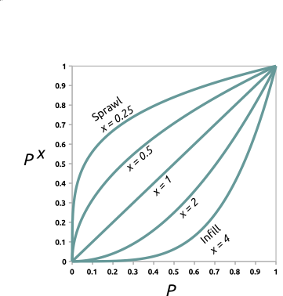
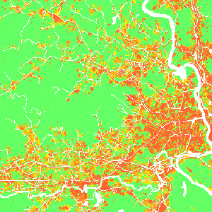
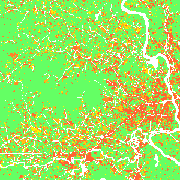
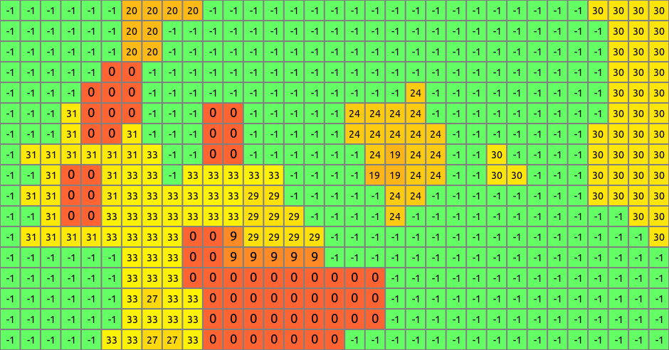

DESCRIPTION
Module r.futures.pga is part of FUTURES
land change model.
This module uses stochastic Patch-Growing Algorithm (PGA)
and a combination of field-based and object-based representations
to simulate land changes.
PGA simulates undeveloped to developed land change by iterative site selection
and a contextually aware region growing mechanism.
Simulations of change at each time step feed development pressure back
to the POTENTIAL submodel, influencing site suitability for the next step.
Patch growing
Patches are constructed in
three steps. First, a potential seed is randomly selected from available cells.
In case seed_search is probability, the probability value (based on POTENTIAL)
of the seed is tested using Monte Carlo approach, and if it doesn't survive,
new potential seed is selected and tested.
Second, using a 4- or 8-neighbor (see num_neighbors) search rule PGA grows the patch.
PGA decides on the suitability of contiguous cells based on their
underlying development potential and distance to the seed adjusted
by compactness parameter given in compactness_mean and compactness_range.
The size of the patch is determined by randomly selecting a patch size from patch sizes file
and multiplied by discount_factor. To find optimal values
for patch sizes and compactness, use module
r.futures.calib.
Once a cell is converted, it remains developed.
PGA continues to grow patches until the per capita land demand is satisfied.
Development pressure
Development pressure is a dynamic spatial variable
derived from the patch-building process of PGA and associated with the POTENTIAL submodel.
At each time step, PGA updates the POTENTIAL probability surface based on land change,
and the new development pressure then affects future land change.
The initial development pressure is computed using module
r.futures.devpressure.
The same input parameters of this module
(gamma, scaling factor and n_dev_neighbourhood)
are then used as input for
r.futures.pga.
Scenarios
Scenarios involving policies that encourage infill versus sprawl
can be explored using the incentive_power parameter,
which uses a power function to transform the probability in POTENTIAL.

Figure: Transforming development potential surface using incentive tables with different power functions.



Figure: Effect of incentive table on development probability:
infill (left), status quo (middle), sprawl (right) scenario.
Additionally, parameter potential_weight (raster map from -1 to 1)
enables to include policies (such as new regulations or fees) which limit or encourage
development in certain areas.
Where potential_weight values are lower than 0,
the probability surface is simply multiplied by the values,
which results in decreased site suitability.
Similarly, values greater than 0 result in increased site suitability.
The probability surface is transformed from initial probability p
with value w to p + w - p * w.
Output
After the simulation ends, raster specified in parameter output is written.
If optional parameter output_series is specified, additional output
is a series of raster maps for each step.
Cells with value 0 represents the initial development, values >= 1 then represent
the step in which the cell was developed. Undeveloped cells have value -1.

Figure: Output map of developed areas

Figure: Detail of output map
EXAMPLE
r.futures.pga -s developed=lc96 predictors=d2urbkm,d2intkm,d2rdskm,slope \
demand=demand.txt devpot_params=devpotParams.csv discount_factor=0.6 \
compactness_mean=0.4 compactness_range=0.08 num_neighbors=4 seed_search=probability \
patch_sizes=patch_sizes.txt development_pressure=gdp n_dev_neighbourhood=10 \
development_pressure_approach=gravity gamma=2 scaling_factor=1 \
subregions=subregions incentive_power=2 \
potential_weight=weight_1 output=final_results output_series=development
REFERENCES
-
Meentemeyer, R. K., Tang, W., Dorning, M. A., Vogler, J. B., Cunniffe, N. J., & Shoemaker, D. A. (2013).
FUTURES: Multilevel Simulations of Emerging
Urban-Rural Landscape Structure Using a Stochastic Patch-Growing Algorithm.
Annals of the Association of American Geographers, 103(4), 785-807.
- Dorning, M. A., Koch, J., Shoemaker, D. A., & Meentemeyer, R. K. (2015).
Simulating urbanization scenarios reveals
tradeoffs between conservation planning strategies.
Landscape and Urban Planning, 136, 28-39.
SEE ALSO
FUTURES,
r.futures.devpressure,
r.futures.calib,
r.futures.demand,
r.futures.potential,
r.futures.parallelpga,
r.sample.category
AUTHORS
Corresponding author:
Ross K. Meentemeyer, rkmeente ncsu edu,
Center for Geospatial Analytics, NCSU
Original standalone version:
Ross K. Meentemeyer *
Wenwu Tang *
Monica A. Dorning *
John B. Vogler *
Nik J. Cunniffe *
Douglas A. Shoemaker *
Jennifer A. Koch **
* Department of Geography and Earth Sciences, UNC Charlotte
** Center for Geospatial Analytics, NCSU
Port to GRASS GIS and GRASS-specific additions:
Anna Petrasova, NCSU GeoForAll
Vaclav Petras, NCSU GeoForAll